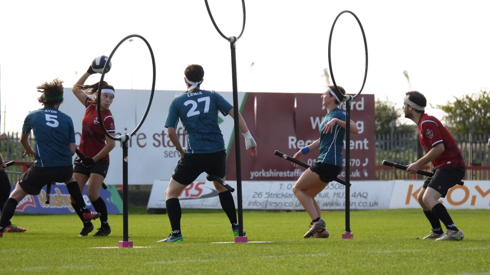

Descripción general y objetivo
El Quidditch Muggle es un deporte de contacto. Surge de una fusión de elementos del dodgeball, balón prisionero, rugby o el pillado.
Cada equipo está formado por 7 jugadores con escobas entre sus piernas durante todo el partido.
El objetivo del juego es conseguir más puntos que el equipo contrario. Se obtendrá 10 puntos cada vez que una Quaffle pase por uno de los aros “mágicos” y el equipo que atrape la Snitch ganará 30 puntos, así como también el partido. Al ser un juego con diferentes roles, cada jugador tendrá unos objetivos concretos: conseguir puntos o evitar que les marquen.
Historia
Surge de una adaptación del deporte ficticio “Quidditch” creado por la autora británica J.K. Rowling en sus novelas de Harry Potter. Esta adaptación de las novelas a la realidad fue en 2005, en la Universidad de Middlebury (Vermont), por Xander Manshel, un estudiante de primer año que buscaba cambiar la tradición deportiva de su residencia de estudiantes. Tuvo un gran éxito originando un gran número de practicantes.
El Quidditch Muggle tiene un reglamento llevado a cabo por la IQA (Asociación Internacional de Quidditch) fundada en 2014. Cuenta con más de 170 equipos, unos 3700 jugadores, campeonatos regionales, nacionales e incluso con una copa del mundo.
Terreno de juego
El campo tiene forma de píldora ya que se compone de tres zonas: un rectángulo y dos semicírculos.
Material necesario
Pelotas de foam, de voleibol, pelota de tenis, petos, escobas (churros de piscina), aros, picas y ladrillos (para construir los 6 aros).
Principales Reglas
Roles de los jugadores
- Cazador: Anotar con la Quaffle (pelota de voleibol) en los aros jugando en equipo.
- Guardián: Proteger los aros mágicos y evitar que hagan punto los cazadores oponentes.
- Golpeador: Utilizar la Bludger (pelota de foam) para incomodar a los cazadores para que no anoten punto. Si le dan a un cazador, este quedará noqueado y tendrá que tocar uno de sus aros para volver al juego.
- Buscador: Conseguir atrapar la Snitch dorada para conseguir 30 puntos para su equipo.
Reglas adaptadas al ámbito escolar
- Cada equipo tendrá un guardián, un buscador/cazador, dos golpeadores y tres cazadores.
- El juego comienza con todos los jugadores en la línea de aros. A la señal del árbitro “brooms up” todos corren a coger las pelotas que están en la línea de centro del campo.
- Si un jugador tiene la pelota en posesión, no se puede desplazar con ella.
- Cada jugador solo puede jugar con su pelota (dependiendo del rol de jugador que sea).
- Cuando un Cazador es golpeado, tiene que soltar la pelota y no puede intervenir en el juego hasta que toque su aro.
- Inicialmente, el buscador ayuda a los golpeadores a conseguir anotar. Solo cuando el árbitro libera la Snitch, los buscadores de cada equipo tienen que atraparla.
Otras Variantes
- La Snitch puede ser un jugador neutro, sin churro y con un peto a modo de “colita” la cual tienen que quitarle los buscadores o puedes dar un “raquetazo” a una pelota de tenis.
- También puedes fusionar roles como guardián/cazador o el número de golpeadores.
- Otra opción sobre los golpeadores es delimitar su zona de juego a los extremos del campo, de esta manera los cazadores jugarán por dentro en un espacio para ellos y diferente.